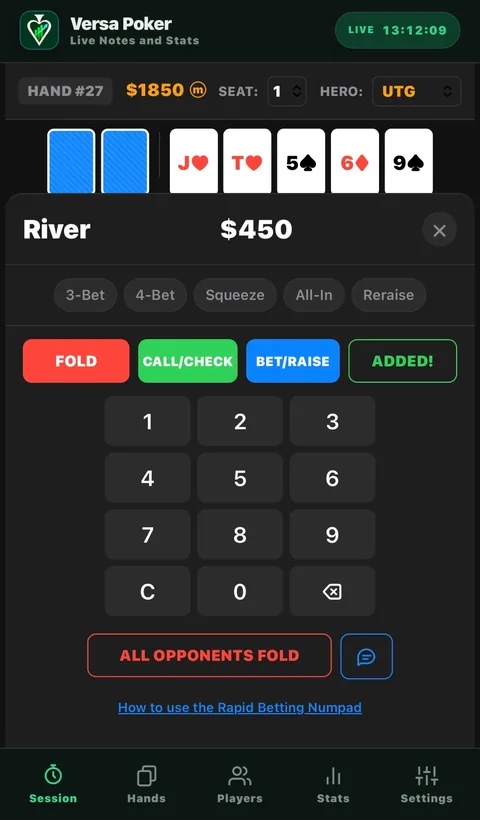
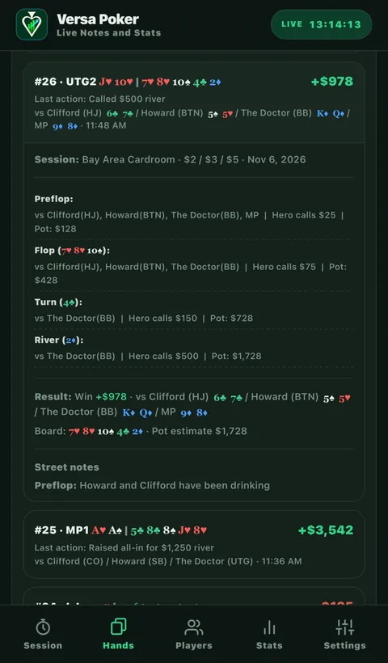
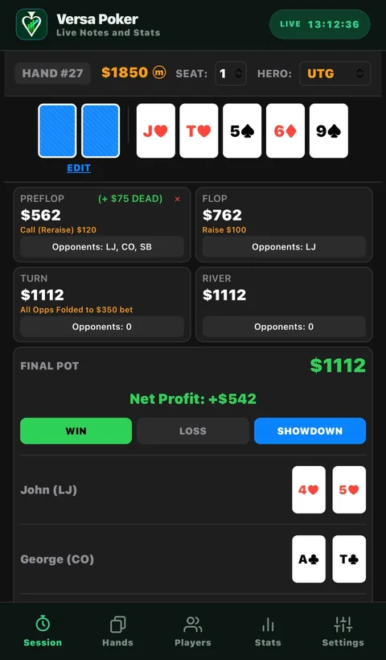
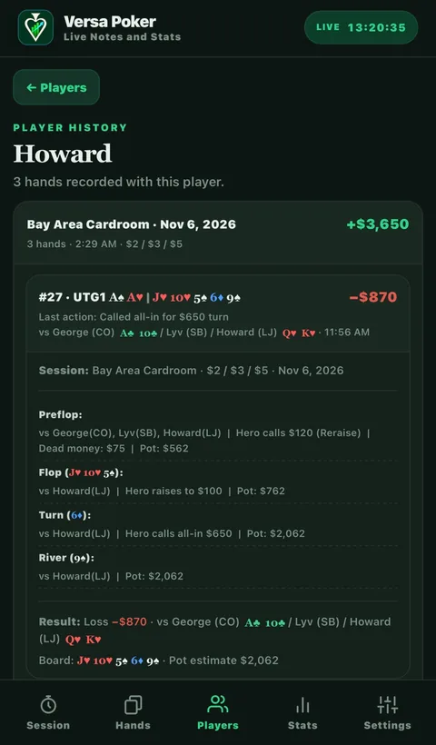
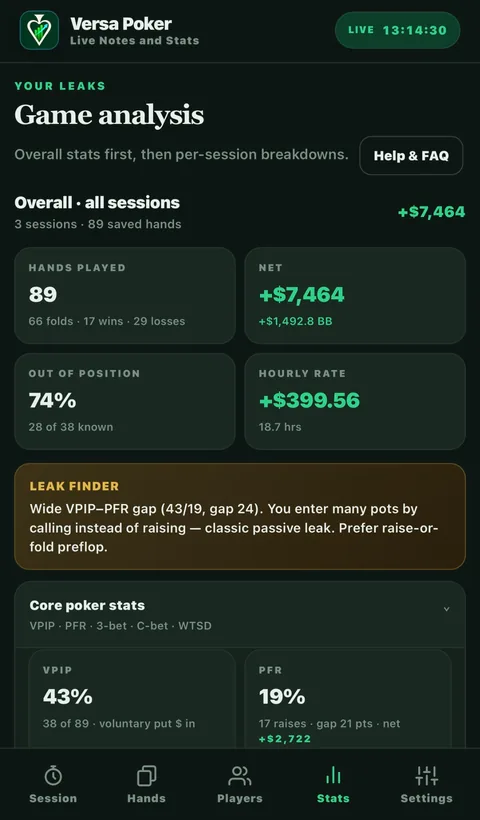
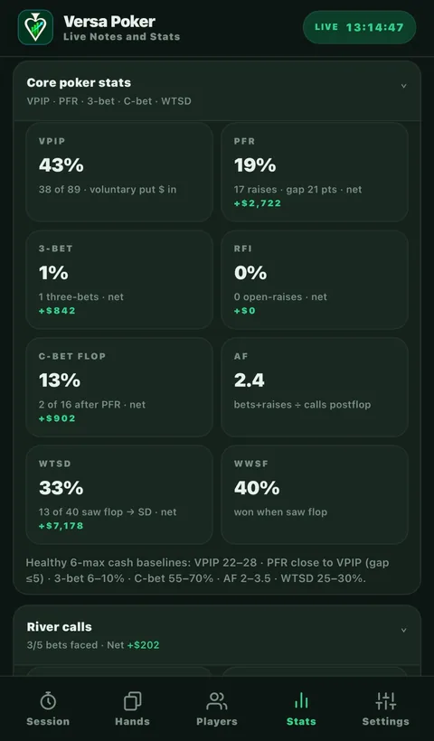
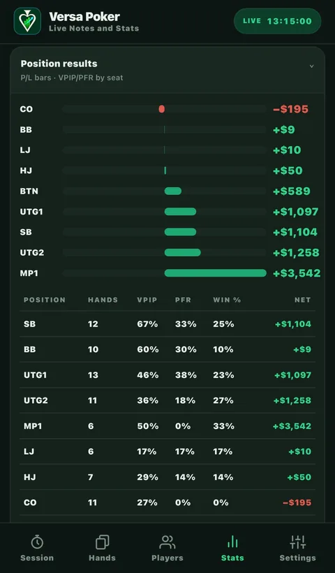
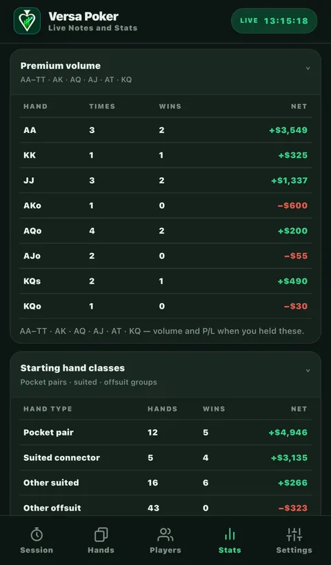
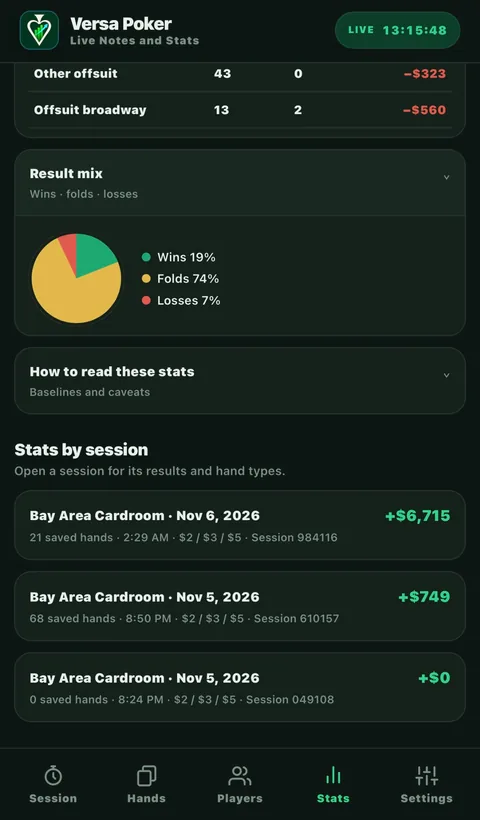

Tap through the key action
Enter an amount, then mark Hero’s action as CALL/CHECK or BET/RAISE. The selected label preserves whether your action was passive or aggressive without a long form or a full typed transcript.
Live poker. Fast notes. Better review.
A rapid betting keypad built for live play, detailed hand histories for later, and stats that show how your results break down by player, position, and starting hand.
A public App Store download is not available yet. Release details will appear here.

Made for the pace of a live game
The keypad keeps live entry short and deliberate. It records the biggest bet faced on each street, your call/check or bet/raise, who remains, and the tags that explain the action.
Enter an amount, then mark Hero’s action as CALL/CHECK or BET/RAISE. The selected label preserves whether your action was passive or aggressive without a long form or a full typed transcript.
Mark details such as 3-bet, 4-bet, squeeze, all-in, re-raise, dead money, and bet-fold. Track who is still in the hand and mark when all opponents fold.
Save a note for each street, including dictation, then enter showdown cards and the result. The quick tags capture the outline; notes preserve the reads and details that matter to you.
Built for live logging: capture the biggest bets and defining actions while the hand is moving, then use the saved street-by-street history to review or add context after play.
Hand history
Move beyond a single win or loss. Revisit the board, Hero’s actions, the opponents still in, dead money, pot progression, showdown, and notes in one saved record.



Player history
Choose or reuse a player’s name at the table, and the app groups the hands you recorded with that person. Review your results across sessions, then open an individual hand to see its cards, streets, and outcome.


Stats and game analysis
Explore overall and per-session results, position-by-position performance, core poker stats, and the starting hands that are helping or hurting your bottom line.
See how often you record premium groups such as AA–TT, AK, AQ, AJ, AT, and KQ—along with wins and net results for each hand. Compare them with broader starting-hand classes such as pocket pairs and suited connectors.
Compare hands played, VPIP, PFR, win percentage, and net by seat to see where your results are strongest and where to review more hands.
Review VPIP, PFR, 3-bet, RFI, continuation bets, aggression factor, WTSD, and WWSF, alongside net in dollars and big blinds, hourly rate, and result mix.
See patterns such as a wide VPIP–PFR gap, then open the hands behind the numbers and decide what the sample says about your play.





Stats are derived from the hands you save. Treat them as a record of your logged play, and use a larger sample of hands when comparing trends.
Your sessions stay yours
Sessions and hand notes are stored on your device. There is no account or cloud sync in the current app. Export a CSV of hand history or a full JSON backup from Settings.
The free trial includes one session and up to 30 saved hands. The planned full-app unlock is a one-time US$9.99 purchase.